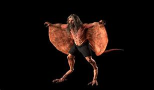

Phi Am es un término del folclore tailandés que se refiere a un tipo específico de espíritu o entidad sobrenatural. En la cultura tailandesa, los "Phi" son espíritus o fantasmas, y "Am" se refiere a una sensación de ser presionado o inmovilizado, similar a lo que en occidente se describe como parálisis del sueño.
Características de Phi Am
- Parálisis del Sueño: Las personas que experimentan la presencia de Phi Am suelen despertarse en medio de la noche sintiéndose incapaces de moverse o hablar, a pesar de estar conscientes. Esta experiencia a menudo viene acompañada de una sensación de opresión en el pecho, como si alguien o algo estuviera sentado sobre ellos.
- Apariciones: Algunas historias describen que, durante estos episodios de parálisis del sueño, los afectados pueden ver o sentir la presencia de una figura oscura o siniestra cerca de ellos.
- Causas Sobrenaturales: En la cultura tailandesa, se cree que esta parálisis es causada por un espíritu maligno que se sienta sobre el pecho de la víctima, impidiéndole moverse. Este fenómeno no solo se considera aterrador sino también peligroso, ya que se cree que puede afectar la salud física y mental de la persona.
Protección contra Phi Am
- Objetos Sagrados: Tener cerca objetos sagrados o amuletos bendecidos por monjes budistas.
- Oraciones y Mantras: Recitar oraciones o mantras específicos que se cree pueden ahuyentar a los espíritus malignos.
- Ambiente Seguro: Mantener el espacio de descanso limpio y espiritualmente seguro, a menudo con la ayuda de incienso o velas sagradas.
Interpretaciones Modernas
En la actualidad, la parálisis del sueño se entiende desde una perspectiva científica como un fenómeno natural que ocurre cuando una persona se despierta durante la fase REM del sueño, antes de que el cuerpo haya terminado de desactivar la atonía muscular. Sin embargo, las interpretaciones culturales, como la de Phi Am, siguen siendo una parte importante de la comprensión y narración de estas experiencias en Tailandia y otras culturas. Phi Am es un ejemplo de cómo las experiencias universales, como la parálisis del sueño, pueden ser interpretadas de manera única a través del lente del folclore y las creencias culturales locales.
